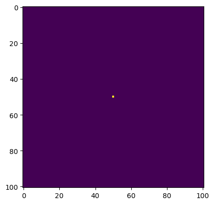
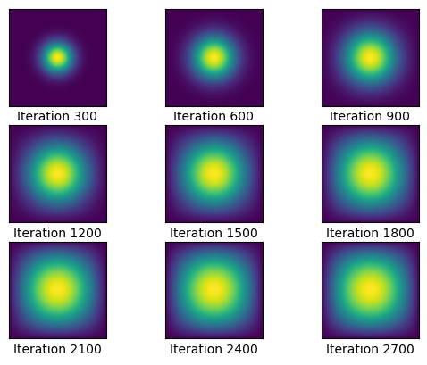

N = 101
epsilon = 0.2Heat Diffusion
We will be conducting a simulation of two-dimensional heat diffusion in a multitude of ways. We will first set the initial parameters.
import numpy as np
from matplotlib import pyplot as plt
# construct initial condition: 1 unit of heat at midpoint
u0 = np.zeros((N,N))
u0[int(N/2), int(N/2)] = 1.0
plt.imshow(u0)
plt.show()
As we can see, we have a point in the very middle of the space with heat. From this point, the heat will dissipate outwards according to the diffusion equation in a circular fashion. Now let’s create some functions that will simulate this.
#initialize A
A = np.zeros((N**2,N**2))
for k in range (N**2):
#create main diagonal
A[k,k]=-4
#create 1st lower diagonal (placing zeros every Nth entry)
if k-1>=0:
if k%N==0:
A[k,k-1]=0
else:
A[k,k-1]=1
#create 1st upper diagnonal (placing zeros every Nth entry)
if k+1<=N**2-1:
if (k+1)%N==0:
A[k,k+1]=0
else:
A[k,k+1]=1
#create Nth upper and lower diagonals
if N+k<=N**2-1:
A[k,N+k]=1
A[N+k,k]=1
Aarray([[-4., 1., 0., ..., 0., 0., 0.],
[ 1., -4., 1., ..., 0., 0., 0.],
[ 0., 1., -4., ..., 0., 0., 0.],
...,
[ 0., 0., 0., ..., -4., 1., 0.],
[ 0., 0., 0., ..., 1., -4., 1.],
[ 0., 0., 0., ..., 0., 1., -4.]])def graph(sols_arr, row_max, col_max, interval):
'''
plots solutions gathered throughout the call
'''
#create fig and initialize variables
fig,axarr = plt.subplots(row_max,col_max,sharex=True,sharey=True)
plt.xticks([])
plt.yticks([])
plt.grid(False)
col = 0
row = 0
i=0
#plot each updated heatmap in correct grid spot
for u in sols_arr:
i+=1
axarr[row,col].imshow(u)
axarr[row,col].set_xlabel(f'Iteration {interval*i}')
if col == col_max-1:
col=0
row+=1
else:
col+=1def heat_matmul(A, epsilon, N, start_mat, iterations, interval):
'''
Runs a heat diffusion simulation using matrix mulitplication and plots it
'''
#initialize values needed
sols=[]
u = start_mat
#update the matrix of heat values over and over
for i in range(1,1+iterations):
u = u + epsilon * (A @ u.flatten()).reshape((N, N))
#store solutions every so often for plotting
if i % interval == 0:
sols.append(u)
return u, sols%%time
u1, sols1 = heat_matmul(A, epsilon, N, u0, 2700, 300)CPU times: user 4min 19s, sys: 4.71 s, total: 4min 24s
Wall time: 1min 51sThis took a whole 4 minutes to run! Let’s see if we can speed up the process.
graph(sols1, 3,3, 300)
Luckily, we can significantly cut the time using sparse matrices. We know that A is a pentadiagonal matrix, so we can use dia matrix to significantly speed up the process. We run the code for 2700 iterations again, and we’ll compare the times.
from scipy.sparse import dia_matrix
A_dia_matrix = dia_matrix(A)%%time
u2, sols2 = heat_matmul(A_dia_matrix, epsilon, N, u0, 2700, 300)CPU times: user 130 ms, sys: 1.61 ms, total: 132 ms
Wall time: 131 msThis is impressive! Before, the total time was 4 minutes, and now the time to complete the simulation was only 132 milliseconds! We can see that the time complexity of the matrix multiplications was significantly reduced, allowing us to achieve this.
graph(sols2, 3, 3, 300)Now, we will use the python package numba to solve this. Instead of using matrix multiplication, we will use a for loop, since numba is best at optimizing these. Now let’s see how this method does compared to the previous two.
from numba import jit@jit(nopython=True) #<--- THE BIG DIFFERENCE
def heat_explicit(A, epsilon, N, start_mat, iterations, interval):
'''
Runs a heat diffusion simulation using by hand matrix mulitplication and plots it
'''
#initialize values needed
sols=[]
u = start_mat
#update the matrix of heat values over and over
for k in range(1,1+iterations):
#manually calculate matrix multiplication result (heat equation)
u_new = np.zeros((N,N))
for i in range(N):
for j in range(N):
tot=-4*u[i,j]
if i>0:
tot+=u[i-1,j]
if i+1<N:
tot+=u[i+1,j]
if j>0:
tot+=u[i,j-1]
if j+1<N:
tot+=u[i,j+1]
u_new[i,j] = u[i,j] + epsilon * (tot)
#store solutions every so often for plotting
if k % interval == 0:
sols.append(u_new)
#update u and repeat
u = u_new
return u, solsWe are just going to do a quick test run to make sure that the function is compiled before we actually run this. We do this because the compilation part takes a significant portion of time, and when we are comparing the times of our methods we wouldn’t want that to play a factor in our analysis when we’re just trying to look at the methods.
u3, sols3 = heat_explicit(A, epsilon, N, u0, 10, 10)%%time
u4, sols4 = heat_explicit(A, epsilon, N, u0, 2700, 300)CPU times: user 45.4 ms, sys: 484 µs, total: 45.9 ms
Wall time: 45.8 msThis was less than 50 milliseconds! This is significantly faster than doing the computations using a sparse matrix, and the power of the numba module is truly put on display here. Graphed below is the visualization of the heat diffusion every 300 iterations.
graph(sols4, 3, 3, 300)